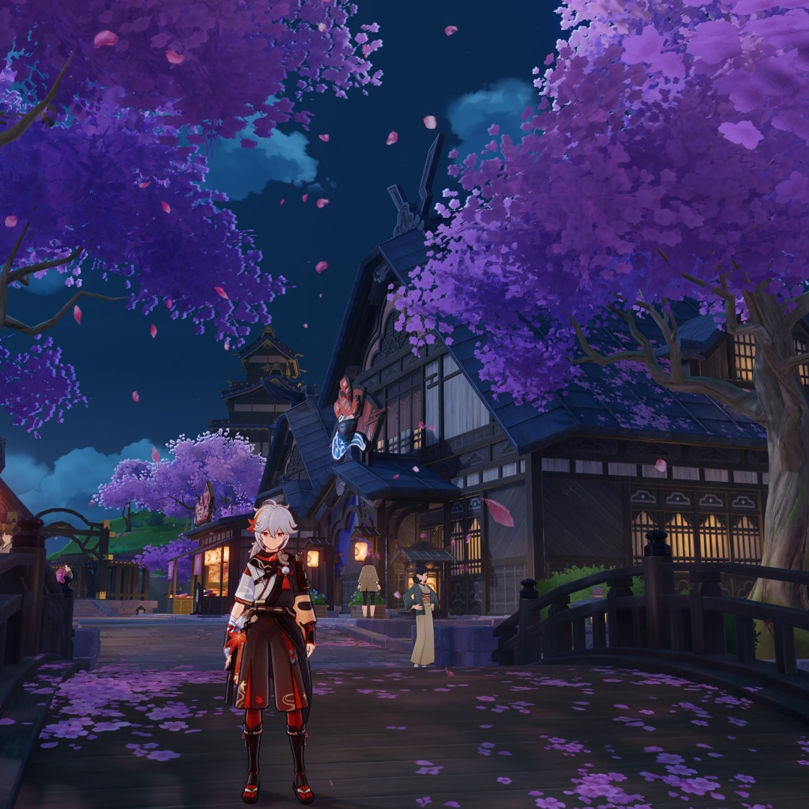

····✦ DESCUBRE LA MAGIA DE TEYVAT ✦····
Al fin ha llegado a los recintos de Madrid la gran exposición del mundo de Teyvat, donde podrás sumergirte en todos los rincones del mágico continente de Genshin Impact. Una experiencia que transportará a los visitantes al corazón de un universo lleno de fantasía, belleza y emoción. Una oportunidad única para celebrar la magia, la aventura y el espíritu que une a millones de fans en todo el mundo.

A lo largo de la visita, podrás adentrarte en el vasto mundo de Teyvat y descubrir sus lugares más emblemáticos a través de impresionantes maquetas tridimensionales, planos originales del desarrollo del juego y una gran variedad de materiales exclusivos que muestran el proceso creativo detrás de cada región. Cada espacio ha sido cuidadosamente diseñado para que los visitantes puedan apreciar los paisajes, ciudades y entornos que han hecho de Genshin Impact una experiencia tan envolvente. Además, tendrás la oportunidad de observar cómo las ideas iniciales se transformaron en los escenarios finales que hoy recorres dentro del juego, disfrutando de una experiencia inmersiva que combina arte, tecnología y narrativa visual
Por otra parte, también podrás conocer de cerca los trajes, bocetos iniciales y diseños conceptuales de los personajes más queridos de Teyvat, junto con el arte original de la animación que da vida a cada héroe y heroína. Estas secciones estarán encabezadas por los arcontes de cada región, quienes servirán como guías simbólicos a través de la evolución estética y artística de sus naciones. Cada sala ofrece una mirada detallada al proceso creativo, desde los primeros trazos de los diseñadores hasta las versiones finales que los jugadores reconocen en pantalla, permitiendo apreciar la dedicación, el estilo y la inspiración que hay detrás de cada atuendo, expresión y movimiento